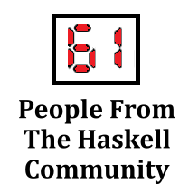

SPONSORS



Recorded 2021-11-10. Published 2021-12-17.
José Calderón is interviewed by Niki Vazou and Wouter Swierstra . José has been working on functional programming at Galois and University of Maryland. He tells us about his research background in many different continents, his experience with teaching compilers, the relation between music and functional programming and the “Recursive Programming Techniques” book that in the 1970s captured the essence of functional programming.
Niki Vazou: Welcome to the Haskell Interlude! I am Niki. I’m here with Wouter and our guest today is José Calderón, who has been working at Galois and at the University of Maryland. Hello José!
José Calderón: Hello! Nice to be here.
Wouter Swierstra: Hi! So José, you have an interesting trajectory through academia and industry and you started off doing an undergraduate in Miami, if I’m right?
JC: That’s right. Yeah.
WS: And, but then you did your PhD in England, in York. So how did you get into functional programming in Miami and what drove you to travel across the Atlantic?
JC: Yeah. So I was in Miami studying music engineering. I wanted to work in recording studios. And of course I decided to do that right as recording studios were dying because recording equipment got so cheap and so, you know, commodified. This is a good thing, but you know, it’s kind of, people can now record albums in their in their room. Which is great.
WS: For podcasts.
JC: That’s right, yeah. And, so you know, the the studio jobs kind of died out but one of the things that the program did have me do was take a programming class. All right? So they were like, if you, you know, you should at least be exposed to this idea. And I, I really liked it.
And in particular, I liked the professor I had, Stephen Murrell, and I decided I would just take every class he taught. And so because it wasn’t my major and, it wasn’t, you know, it was all electives, I just, whatever he was teaching I took that semester. And it was great! And I learned data structures and algorithms from him, and and programming, and in one class, it was ostensibly titled software engineering, and you know, I don’t want to tell on him too much, but what we did was, we implemented our own, like, Lisp like language.
So you know, I don’t know if it was quite what you would consider a software engineering course, but I really enjoyed it. And that was my first exposure to functional programming, and in particular, I remember when we got to the point where we had to decide, like, order of arguments. And he actually showed us, like, you could even do it where you don’t evaluate the arguments unless they’re needed and this blew my mind! I was, you know, I was a very lazy person. I was like that’s, that’s my style! I only want to do things if it’s absolutely necessary.
Um, and so that was I absolutely loved it. And I didn’t, it didn’t really click that that was a thing you could study in and of itself.
WS: Uh, huh.
JC: Um, but I was, I was talking to him about what I was going to do after graduation and he said, um, very straightforward, he’s like “Oh I think you should go to grad school”. And in particular, he said he thought I should go to the UK.
WS: Okay.
JC: He had studied in the UK. He got his PhD at Oxford. And the reason was because, at least at the time, I don’t know if it’s still this way, but in the UK it was like, your grade was like, one big project at the end or one big exam was usually how your grade was handled, and he thought I would do better under that sort of regime. And being young and impressionable, I just said oh okay, this professor is telling me I should go to the UK for grad school, so I’ll do that. I only applied to schools in the UK. Which, looking back, blows my mind! Right? Like I didn’t even have, I didn’t even go like, well, maybe I could look at other grad schools. No, I just did exactly what he said I should do and I applied to a bunch. Um and I visited them. And York, York gelled with me, and so I went to York.
But I, I still didn’t know functional programming was a thing. I actually went to do what’s called natural computation which is like bio inspired and physics inspired computation. Things like, you know, artificial immune systems and quantum computation and my master’s thesis was in modeling quantum dots.
WS: So that, that was like a first year grad school in York where you did…
JC: That’s right.
WS: Okay, and then you did some courses on presumably Haskell there as well or?
JC: Yeah, so Colin Runciman is at York and I, you know I, I heard of this functional programming thing and I was doing my master’s thesis in Matlab and absolutely hated it. And I started going like what, you know, I wanted to be able to articulate what I didn’t like about it. Right?
It was, it was just a feeling I had. I’m like, I don’t feel like I’m being, I’m not able to express the ideas the way I want to. But I didn’t yet have the vocabulary to like explain why that was. And so that’s where, you know, by asking around or whatever, I found out there’s this whole discipline of PL you know? And Ah, who does that here at York? Oh Colin Runciman. I’ll sit in on one of his classes. I just asked him. I, I didn’t take it for credit. I just sat in on his Introduction to Functional Programming class and that’s yeah, that’s where it all clicked and I was like “oh I want to do this!”. And I, I spoke to him. I, “Can I do a PhD with you?”. And he, he was very generous about it and was like, “Yeah!”, even though I just came into his office. And like three weeks later, I started my PhD. It’s like you know, just absolutely bonkers. Yeah.
WS: Okay, so so what did you do? What was your PhD on?
JC: So my PhD was on automatic parallelization of lazy functional programming, um programs. So things like Haskell but you know it was narrower in scope. It wasn’t full Haskell.
WS: Uh, huh. That’s a, that’s a pretty hard problem though, I imagine. Usually it’s the question “How do you get it? How do you make sure that like parallelizing is really a speed up?” It’s usually like there’s a lot of overhead involved and then if you’re unlucky, you manage to make your programs parallel but much smaller.
JC: Yes, so what I would say is one of the main results of my thesis is further evidence that this is a hard problem, um and requires further study. And yeah, I think it’s the sort of problem that like, it’s, it’s kind of great for a PhD in some way. Because you have a few years where you can just dig in.
WS: Yeah.
JC: And that’s hard to get in other times of your career. And also, you need the kind of like, ah you know, naivete to be like, “Oh this is a thing I can tackle”, you know? You don’t yet know quite how difficult it is. So those two powers combined and you know, and, and Colin was was so great about it. He knew and he, he was very clear. You know, he, he didn’t, he didn’t mislead me at all. He’s like this “People have tried this. A lot.”. Um, and in the first few months of my PhD it was all reading stuff from the eighties and nineties that didn’t work out. Right?
WS: Yeah.
NV: But… so there is a kind of a recent line of work at Facebook about parallelizing Haskell now.
JC: Yeah, and so, and so I think you know, the the, there’s a really healthy in, in the Haskell community, there’s a really healthy line of research in parallelism, um, and kind of like what I would call like semiautomatic methods where like, you know, the HAXL thing they did at Facebook which is, you know, about batching stuff and and making things. Things can work concurrently really nicely and ApplicativeDo, figuring out where things can happen independently or where they need to happen together. And I consider those like semiautomatic. Where the the main thing of my thesis was like you just write a functional program. You’re like “you don’t worry about it at all” and the compiler tries to make it parallel which that’s ah yeah that’s, that’s the, yeah that’s the dream. Who knows if we’ll ever reach it, right?
WS: Um, so um, what was your time at York like? I mean it seems like there’s ah, there’s quite a lot of functional programmers from there, besides Colin.
JC: Yeah. Yeah that’s right. Um yeah I, I miss York a lot. Um mem and my time there was really enjoyable. It was, it was great working with Colin and the the whole department there is very good. And so, you know, it just, you know, it was some of the best years of my life so far right? You know, you, you have lunch with a lot of people working on hard problems and you know, it’s, it’s always interesting conversation and getting different perspectives.
You know I often hung out with the real-time systems folks. Which is like a very different perspective on the world you know, and, and so I got a lot from that and learned much more about like systems. Um, so yeah, I really like York. York’s also um, it’s a smaller town and the university has that kind of smaller town vibe.
WS: Uh, huh.
JC: And the way I describe it is like the pace is less intense and I like that. It feels like a place where you can ponder, right? And it’s not a hyper competitive place. It feels really collegiate and collaborative and and that’s more my speed as well. You know, um.
So yeah, I, I’m not sure if that’s what you’re asking. But I really liked my time at York, I miss it a lot.
WS: Okay sure. But so, but when you finished your PhD, you moved back to the US. Is that right?
JC: Yeah, so ah, when I was getting near the end, me and she’s now my wife, she was my girlfriend at the time, we kind of were trying to figure out what do we want to do next. And we made a short list where we said “I’ll apply to these things and if any of them work out, we’ll stay in academia, otherwise I’ll get a job in industry”. And um, the unfortunate thing with my short list was a lot of them happened to be in the UK and then the UK changes its immigration rules and it wasn’t, I won’t claim it made it impossible for me to stay, but it made it more difficult in a way that I wasn’t sure I wanted to navigate. And so I, I was like “Okay, I guess industry it is!”. And so Galois is kind of known in the Haskell community and so I applied there.
NV: Um, so Galois is industry?
JC: Yeah Galois is industry. Yeah yeah, although some people say it’s a halfway house for academics? I think that’s probably a fair description. Um, ah so yeah I applied and and got the job. I felt really lucky. Um, they’re based in Portland but I have family on the east coast. So I, I got a job as they were starting an east coast office. So I was able to work just out of DC.
WS: Okay, so what kind of projects have you done at Galois?
JC: Ah, most of the projects I’ve done have been dealing with privacy in, in different ways. So for example, the first project I worked on was a, a project about quantitative information flow which is like, you have a program and, more than just like, control flow ah, you, you want to know how much of something leaks when you run this program. So the idea there is interesting like if you have a password checker, that’s like the classic example. Um, if you get it wrong, you try a password and it tells you that wasn’t the password, you’ve leaked very little about what the password actually is. But if it returns true, you’ve, you’ve leaked everything about what the password is. And so how can you quantify that to say like, you know, what’s the worst case leakage? In the, in the case of password checker the worst case is everything. But in what’s the average case, what’s the expected case? And so quantitative information flow is about quantifying the amount of leakage. And you can think of leakage as an inference problem. So if, so if an adversary sees the result of your program, how much can they further infer about your secrets.
WS: Okay, right? So the the adversary sees your program is a black box and they can maybe provide inputs and then observe outputs and then how much can they guess about what’s going on in the black box.
JC: Yes. So that, that’s, that’s correct. There’s also the format where the program itself is visible. So yeah, um, and those are different. You learn different amounts from those two situations.
WS: Sure.
JC: Um, but yeah, so I worked on that for a few years and that was actually, ah you know Galois, I mentioned Galois is known in the Haskell community. But for my first two years I programmed in OCaml that was which you know that’s classic. That’s how that happens? Um, but I enjoyed that a lot and it was good to to learn that as well.
NV: But you did this security project in OCaml?
JC: Um, yeah, so the reason was because this was a project that had started. Stephen McGill was the PI at Galois and he had been a postdoc at University of Maryland and they had started some of this work when he was a postdoc at the University of Maryland. And they had done it in OCaml and so I kind of inherited that code base and, and and, ran with that and we, you know, working with the Maryland folks.
We also expanded the idea so like, how can you get because there’s always like an accuracy/efficiency tradeoff like “Yeah, you can get really accurate information if you’re willing to run this for two months and have a supercomputer” versus like “We need an answer today”. How do you, how do you deal with that and so we figured out ways that you can have a knob to like maybe get pretty accurate results but with less certainty. So we make the result also statistical in nature and stuff like that. So that was a lot of fun I really enjoyed that.
That’s how I got to meet Professor Hicks at the University of Maryland doing that work. And then after that I worked for a few years on compilers for Homomorphic encryption and, you know so, also privacy related but there the model is very different. There the model is, “I have some data and you have some program or some algorithm or something that I want to run on my data. But for for reasons you don’t you may not want to share your algorithm or your program or, or you might have computing resources I don’t have access to but I still don’t want you to see my data”. How do we, How do we square this circle and homomorphic encryption is one answer. So I can encrypt my data in such a way that you can run your program on my encrypted data and when you get the result, it seems meaningless to you. It’s just an encrypted value but you give me that value and I can decrypt that with my with my key. And um, very interesting, lots of lots of problems to deal with in that space. And so I worked, um I’m not a cryptographer, but I worked with cryptographers writing compilers so that you know, the, the programmer doesn’t have to write in this kind of like homomorphic world. They can write programs. We use Julia for example, so they could write programs in Julia and have their Julia programs translated to this homomorphic encryption scheme.
WS: Right. So that’s largely, that’s like a PL take on a hard cryptography problem, right?
JC: Yes. Yeah, and that’s definitely one of the areas where Galois is finding a lot of success. Which is, you know, applying PL ideas or a PL lens to cryptographic problems.
WS: Yeah.
NV: And is this driven by blockchains or what are the applications of this?
JC: Ah, no, so that particular work was not blockchain related. This work, you know, often it’s, it’s ah, there are few scenarios you can imagine people being interested. So the funder for this was the government and so here you know, one example we were often told is like you know, census data. I don’t, it’s not running live with the census but you could imagine where like ah, people might want to, um, run certain algorithms with census data but don’t want the census data on AWS or something, right? Like they want to be able to access all this compute infrastructure but not have the unencrypted data there or whatever. So that’s one scenario you could imagine. Um, another scenario we were told is like genetic data. So again, this is in the future but you might one day be able to, like, own your genetic data. We hope, you know, it is kind of yours, in a sense. And ah, instead of sending your unencrypted genome to some company that has some nice thing that can tell you, you know, maybe they have a likelihood of telling you, you know, “Hey you should check up for this illness or this thing”. Or you know, it seems there’s privacy concerns, right? With like, you don’t want to just necessarily share that information. And so homomorphic encryption is one way that you can use someone’s computational insights on your private data.
NV: And this selects into your, you’re telling about medical data. This could also have been used in this COVID tracing app.
JC: Yeah, maybe yeah. I, yeah I have to think about how it would apply. Um, right now homomorphic encryption is still early days. So it’s so expensive to compute even relatively simple stuff that we haven’t seen a ton of applications. Um, we did do one demo that was pretty cool. We did a image, um well, it was image classification? It’s been a few years now but we did image processing where, ah we had, you know, we made up the demo right? So there wasn’t actually any secrets involved. But someone could give us an encrypted image of theirs. We could run a image computer vision problem on that image, give them that back the result and that way we didn’t have to, like, tell them how we did our computer vision. What our secret sauce was.
WS: Right. So um, besides spending time in industry, after a while you started to pick up teaching again and are now at the University of Maryland. So how did that come about?
JC: Yes, ah, Twitter! Twitter is answer to that. So ah, David Van Horn. I forget exactly who was but I think it was either Professor Hicks or David Van Horn mentioned how big, like, enrollments had gone through the roof at Maryland. And I was, the numbers shocked me. You know, my, my undergraduate degree, my whole cohort started as twenty people and ended as like twelve. I was very used to like really small, um, classes. And so one day when I saw this number on Twitter I just couldn’t believe it and so I, I tweeted out. I just responded to the thread. I was like “do y’all want help?” you know, and David Van Horn was like “Yes Please!” you know, so I did.
NV: That’s how you get a job!
JC: That’s right. Yeah, that’s how you get a job these days. Ah so yeah, I emailed him and we talked about what courses, you know, I could feasibly teach. Compilers came up of course.
WS: Uh, huh.
JC: And so I started as an adjunct, where you know, the majority of my time was still Galois and I would teach one course a semester at Maryland. Um, and yeah, so that that’s how I started doing that and then slowly it’s, it’s consumed more of my time.
WS: So are you, you’re taking up more and more teaching responsibilities then or?
JC: That’s right.
WS: Yeah, okay, right. And what courses do you teach?
JC: Ah, so this semester I’m only teaching one very big course. It’s a course of about six hundred something students.
WS: Wow! yeah.
JC: And it’s the introduction to systems course. So their first exposure to something like C or assembly and process control and stuff like that. I’ve also taught compilers many times and introduction to data science where we, where students, like, learn how to, you know, run different regressions on data, clean up data, you know, kind of do the whole data science pipeline thing. And then next semester I’m teaching compilers and data science and then also a very small seminar on computer music. So I’m, I’m very pleased about that though.
WS: So tell me a little bit about your compilers course. What’s different about all the and better compared to all the other compiler courses asked out there?
JC: Yeah, so ah David Van Horn came up with the initial view of, of this curriculum.
WS: Uh, huh.
JS: And the idea is there’s kind of a few angles you could attack the compiler. And the kind of standard angle that most textbooks and I think still most courses take these days is “Let’s go through the compiler in the order that the compiler does its thing”.
WS: Right.
JS: Right? So let’s talk about lexing. Okay, let’s talk about parsing. Let’s talk about AST transformations or you know, and that, you know, that’s how I learned right? It’s definitely, it definitely works. I learned that way. But there’s ah, there’s another view which is “It’s not necessarily true that the order the compiler does things in is the best pedagogical order”, right? That would be, in a sense that would be, kind of a wild coincidence, right? Um, which you know, maybe it is, ah, that big of a coincidence but the idea David had was “Well let’s, let’s go through an entire compiler for a trivial language first”.
WS: Uh, huh.
JS: So on day one, like, after the first lecture, we have a compiler but the language it can compile is just integers.
WS: Right.
JS: Right? Like that’s the whole language. But there’s a runtime system in C that we write. It calls assembly that we generate.
WS: Uh, huh.
JC: That assembly returns and our runtime system prints out the value. Like we go through the whole thing. You, you have to parse integers. That’s still the thing you have to do. So you go through the whole compiler pipeline for this trivial feature and then every lecture you add a feature and that lets you discuss “We want to add variables, right? So let bound variables. What are the choices we have to make? We can, not evaluate the body until it’s needed right? We could do kind of like a lazy let bound or we could, ah, do it eagerly but also scoping”. Like we have choices and scoping.
And so it’s, it’s interesting because each lecture is pretty self-contained. It’s this one feature. But then you get to say what parts of the compiler need to change. Some features you never have to change the runtime system. Those, those are the ones the students prefer right? But other features you do have to change the runtime system. And so it, it helps students understand like how features relate to what’s going on. And the other thing I like about it ah is that it lets students understand that language design, like, there are choices.
WS: Yeah, it’s a human activity right?
JC: That’s right. And those choices have tradeoffs, right? So sometimes if a student is like “well could we have done this?”. If it’s easy enough, I’ll, we’ll do it and, and I’ll just show them, well, that this is what happens if you do it. If it’s more complicated I can explain, like, “well if we do that here are all the consequences that might come from that.”. And the the reason I like that a lot is because I think even when students take more traditional compilers courses, they walk away knowing how to write compilers but they don’t walk away knowing how to design their own language.
WS: Right.
JS: Because in essense, like, if you have to talk about how to lex the language then you have to talk about how to parse the language. There isn’t a lot of time to, like, design your own language and they wouldn’t even know where to start. So these languages in these more traditional textbooks come from on high right? Here’s a language fully designed. Let’s implement a compiler for it. But we all know that’s not how languages get made. Right? It’s very rare that they just drop fully formed. Usually you have some kernel that you add stuff to.
WS: Right.
JS: Um so, so this, this course takes that idea very seriously. I’m not, you know, we always were tweaking it every semester and trying to improve it. But right now I’m, I’m liking it.
WS: Okay.
NV: And so ah, every day you add a new feature to your language. That’s the idea?
JC: That’s right. So they, just last week, I’m not teaching this semester but um, last week they added lambdas. Which is, which is one of the harder features to add, but also one of the more interesting because it kind of once you have that, a lot of other features you can implement in terms of that. So it’s, it’s a really powerful one.
WS: Yeah.
NV: And like can you accept requests like “Add this creative feature that makes no sense”?
JC: Um I did, I did do once one semester where the last two weeks were student, like, it was, it was democratic “you all vote what we want to talk about”. And I was shocked to see what they picked. They, one time they picked modules.
WS: Uh, huh.
JC: Um, which, that’s hard to do in one week. So you know we, we did our best and the ah, the other thing they picked was like low level, like “How do you do peephole optimization?”, stuff like that. And I was shocked they didn’t pick static types. I assumed they would pick static types, but they didn’t pick it.
WS: You don’t do any type typing. It’s a compilers course right? yeah.
JC: That’s right. Yeah yeah, So that’s, that’s one thing I think we are going to change it. So Leo, who taught it last semester, he did a language that had static types. And he, he said the students really got a lot out of that. So I think we’re going to make that a permanent fixture. But yeah, the initial language is, is in the Scheme/Racket tradition.
WS: Yeah. Fair enough.
NV: And you use Racket to implement it, uh?
JC: That’s right, That’s right.
WS: So how would you compare, um, life at academia and life in industry? Even if for industry Galois being Galois in this case?
JC: Yeah, Galois flavored industry?
WS: Yeah, yeah.
JS: Um, there’s a lot of ways particularly with Galois that’s similar. Ah, you know I, I don’t really, in my day to day, I don’t really have, like a boss that’s like telling me the things I should be doing. Which is, you know, always surreal because I feel like I’m such a mess someone should be telling me what needs to be done. But both at Galois and at Maryland I’m just kind of left to my own devices. Um, so that that’s one way they’re similar.
But the main way they’re different, is the, is the type of of work and, and by that I don’t necessarily mean teaching is different than, than what we do. At Galois I think that’s kind of clearly true, but it’s that, in, in teaching there’s a lot more like, urgency and fires that need putting out. You know, I’m dealing with student issues or making sure the exam is prepared or making sure the exam is graded and these things have a really strict, like you know, not just they have deadlines but it’s like, a very, so ah, quick cadence right? Like every week there’s some big thing that needs doing.
WS: Yeah.
JC: And um at Galois there were still deadlines still things that needed doing but the space between them was bigger and in some ways that’s nice. You get to stretch out, think deeply about big problems. Ah in some, sometimes that’s not great because then, because of, I’m also left to my own devices. Then I, I get distracted and, and then “oh no I have to finish that thing very quickly!”. And then there’s a big crunch mode which is my own fault but that’s that, that’s that.
WS: That’s interesting because I have kind of exactly the opposite experience in that when I when I worked in industry if everything was scrum and agile and we had two week iterations, I felt constantly stressed out about like “Oh I have to deliver this thing. What if I can’t finish this feature or what if I’m, I’m kind of stupid and worthless and please fire me and put me out of my misery!”, right?
And whereas in academia I know, like “Okay, there’s a lecture and it’s coming up but I’ve given the lecture before. I have someone else’s slides or I’ll, I’ll manage. I’ve got, I’ve done this stuff. I know how to do this.”. Maybe it’s also just in my own perception somehow but I always feel that in academia there’s a lot of uncertainty about you know, getting a paper published or getting tenure or getting a grant funded or anything like that. But that’s kind of, a lot of it is long-term uncertainty. I mean getting one paper rejected or not doesn’t, won’t make a huge difference to your career but…
JC: Right.
WS: …getting tenure is like this bigger step which is more open-ended. And, and I don’t mind that kind of long-term career uncertainty so much whereas the kind of short-term “Here’s the next deadline and the next feature that you need to implement or the next bug you need to fix”. And that’s, I found that really, really exhausting. But…
JS: Right.
WS: Yeah.
JC: Yeah I think that’s fair. I guess one thing to add is, my, my role at Maryland isn’t research right? So I think I would, I would feel similarly about the research aspects which is I guess why at Galois I have that same sort of feeling right? Because it is more researchy. Whereas at Maryland it all, all my duties there or here – I’m physically here so I should say here – are, are teaching related.
WS: Yeah.
NV: Um, so can you in a little bit this mystery about the structure of Galois?
JC: The mystery about the structure of Galois. Okay I didn’t realize there was a mystery. It is weird. It’s a weird place. So, so I completely believe explaining needs to happen. I, what mystery do you think there is?
NV: Okay. The mystery in my mind is that it’s a very nice place that everybody is in equal status. But you have this like mysterious way to collaborate everybody together without having ranks.
JC: Um, yeah.
NV: Sounds very ideal to me. I cannot understand how this is happening. Like, to be like and have somebody below me let’s say and then a different project I am below this person.
JC: Yeah, yeah, so okay, that’s that’s that’s very fair. Yeah there’s a lot to unpack there. So the way Galois describes itself is “it’s, it’s a collaborative web” is what they say right? And so, we’re computer scientists so we can think of it as a graph where people are the nodes in the graph, and the edges are some sort of work relationship. Ah in a lot of companies, those edges are extremely directed and you won’t have, you won’t have like, one edge going to one node and then an edge going back the other way. Right? They kind of all flow in one direction for the most part whereas at Galois you can have very complicated flows.
And so the idea is I don’t strictly have a boss at Galois. There is no one who says “José, this is how you have to spend your time in the next few weeks”. Instead it is kind of my responsibility to make sure I am finding work to do, right? And what that means is I can’t do nothing, right? And I also just can’t do whatever I want, right? There is less kind of academic freedom than I would have at a university. There are projects where client based a client has paid us to do a thing, we’ve got to do that thing. But it is my individual responsibility to find where I can be useful on a project that has the funds to have my time. And so a lot of, you know a lot of time at Galois you’re having conversations with people “Oh what are you working on? Oh you’re working on this. Oh do you all need help with that?”, bla bla bla, stuff like that.
And so if I’m working on a project that let’s say you were leading, you know like, then for that particular project, you’re, you’re the boss. Right? You’re not a boss of my time overall, but you’re a boss of that for that project. Whereas it could be that on another project I’m leading it and you’re helping out and so for that project I would be the boss, right? So it’s not that no one can dictate the direction things go. It’s just very project related and not dictating the individual. Like, I can and I have, I’ve I’ve, left projects for various reasons I didn’t like, the you know, how the work was being used. Maybe I felt like a moral ah conflict and so I didn’t want to be on that project anymore. And that’s completely legit and and an accepted part of working at Galois that I have the autonomy to decide what I work on. Now I want to be fair because I know that, I know we’re being recorded so that’s the picture it paints and I think I think um, that is an ideal that people at Galois try to work towards.
But we shouldn’t forget that there’s always implicit power. Right? And sometimes it’s as innocuous as “I’ve been there longer and so people just kind of my word has a little more weight because I’ve been there longer” or sometimes it’s because someone brings in more projects than another person and so they kind of have a little more weight in when they’re saying “Hey! I think we should do this?”.
NV: Um, where brings in projects means brings in money or…?
JC: Yes. Yeah, yeah, that’s right.
NV: Okay.
JC: And so, you know, I don’t want to pretend that there isn’t that. And I think you know every organization has the, you know, the way they, they say they run and the way they actually run. And the, in the ideal, that difference is is minimal. And at Galois I think people try to make it so that “Yeah, we are all kind of on equal footing” etc. etc., but it would it would be silly to pretend that that was completely true, right? You know, there are people at the company that when they say a thing more people listen and, ah you know my, my frustration is often when people pretend that their word doesn’t carry more weight, right, you know? And that’s true at Galois and anywhere else. Like we shouldn’t pretend that like “Oh you know, no one looks up to you”, right?
This actually came up at Maryland yesterday where students, um, some of my teaching assistants were saying “Oh, students are really intimidated to go to up up to the lecturers”. So I, I am co-lecturing with someone. And you know, people who know me (and the TAs know me pretty well), they know that there’s no reason for students to be intimidated to come and ask me questions. But that doesn’t change the fact that just because like the fact that I am the lecturer is intimidating for many students. It doesn’t matter me the individual but my position makes it intimidating.
And I think it would be folly to pretend that that wasn’t true. And just be like “Oh I’m just José. I know I’m, I’m silly you know. Come, come to office hours”. And I think, you know ah, we have to sometimes acknowledge that we have positions of power sometimes. Right?
WS: Um, yeah. For sure. Um, so what about the seminar you’re teaching on Music and Functional Programming? That sounds like fun!
JC: Ah, oh yeah. Um so that came about… there’s a, there’s a program here at Maryland called, like, digital. No, that’s not what it’s called. I’m going to look it up because I don’t want to put you…it’s the acronyms DCC. So let me see what it is. Design, Cultures and Creativity – that’s what it is. And this is really small proportion of the University of Maryland student body. And it’s, it’s like very liberal arts, like in the ideal. So it’s people doing multidisciplinary stuff that aren’t just focused necessarily on one thing. They want to get a breadth in their education outside of just one department. And so they host these seminars that the freshmen in this program take, or first year’s take and they asked me to host one. Professor Hicks gave my name as someone who might do a good one. And they let me, you know again, I don’t know why they did this, but they were just like “Go. You tell us what you want to teach”. I was like “Okay!”, you know, “I’ll make a course I wish I could have taken”.
WS: Yeah.
JC: And that, that’s ah, this idea of I… I love music, um you know, big part of my life ah to this day and I love abstraction. And I love the the kind of to me functional programming and even computer science more widely kind of like is the study of abstraction. Like how do we make abstractions and make sure we use them correctly or how do we make abstractions that can’t be used incorrectly or something like that, right? And so the course is “Computer Music and Sound Abstractions” and my goal is that they understand the pun by the end of the course, right? So we’ll talk about what are the, what are the…
NV: Takes some time to get it!
JS: Yeah yeah, it’s it’s ah, it sneaks its way in there right? Because the music really throws you off. Ah, but yeah, so we’re going to start looking at abstraction as it occurs in music.
WS: Uh, huh.
JC: So sound is you know, sound waves pressure waves in air. But that’s not how we talk about it, right? When you’re playing piano you’re not thinking about pressure waves, right? There is an abstraction in front of you and one for the piano it’s a keyboard. If you’re a composer the abstraction might be notes. But these are all like the abstractions we choose enable us to express certain things and not others. So like a very concrete example is on a piano, there’s twelve notes per octave and you can’t play the blue note. So the blue note is this thing that came out of Blues and Jazz, which is between the minor and major third. It’s between the two and on piano there isn’t a key there. You can’t do it. It’s not possible. So that choice of abstraction limits our expressive, you know, power. Like we can’t express everything and so there’s different things you can do, right?
One thing you can do is, like well, what can we write to, like, evoke that same thing, right? How can we abuse this abstraction to try and get the same expressive thing out versus “Well, on a guitar you can just bend the note”, right? On a guitar you can, you can make it so that the pitch is between. Or if you’re singing, you’re not restrained twelve notes per octave. If you’re singing you can just hit the blue note directly.
WS: Right.
JS: Um, and so we’re going to talk about abstraction that way first and then we’re going to introduce DSLs for making music. Things like Sonic Pi, things like Utopia, things like that. And then my goal is to, you know this is ambitious, but my goal is then to show like how do we reason about soundness so we have these abstractions. What does it mean for an abstraction to be “correct”? And I’m putting that in scare quotes. And of course in music that’s going to be very hazy but I’ll use examples where it’s a little more concrete.
JC: And and yeah, that’s, that’s the goal. I wish there was a course like that when I was a student. So we’ll see how it goes.
WS: So who’s taking this course? Is this more CS people who have a, who are taking, like a broad bachelor or…
JC: Ah, it’s, it’s a mix! So there are students like, one student emailed me the other day asking if she could take it and she was saying “I can play piano but I’ve never done CS”. And I’m okay with that because the the idea is that we’ll, we’ll get you using something like Sonic Pi from zero.
WS: Um, so another thing you’re famous for is you have a series of blog posts on a book…
JC: Um, that’s very generous. But yeah.
WS: …called a, yeah called Recursive Programming Techniques, and this is an old book. It’s from the 1970s yeah yeah, yeah, and um…
JC: Um, 1975? Yeah yeah.
WS: In it you go through the chapters of the book or that you, you haven’t completed the blog post series. But you’ve picked out a few chapters there and kind of tried to summarize them. So why do this?
JC: Yeah, yeah, but’s kind of so to. So first of all, ah great question! I don’t know if I’m famous for it. But yeah it it did make a little splash I think. Um, this book means a lot to me. It, it’s ah the, the way it came into my life is I, I went into Colin’s office really excitedly! One time I had just read a paper. Um I won’t, I won’t name it because I have the rest of the story unfolds. But I read a paper and I was so excited about the ideas in the paper. I was just like “This is so cool! How does someone come up with this? This is, this is great!”. And I’m talking about it with Colin and he goes “When was that paper written?”. And we look and it was like 1986 or something like that. And he goes “Okay”. And he goes over to his bookshelf and he pulls off Recursive Programming Techniques. And he’s like “I want you to read the second chapter of this book”. And it was the same stuff!
All the stuff I was excited about in the paper was just laid out super clearly by this book. And this of course blew my mind because I thought you know, it, it was even ah, more than a decade older than I thought it was, right? Like this is, ah these ideas have existed for a while and that made me more excited. So I of course, read the whole book and I think so much about what I love about functional programming and… and my claim, and this is why I started writing the blog post series, is, my claim is “Actually many people if not most people who really find themselves liking functional programming, the core of it is described by this book”.
And the reason I find that interesting and important is because I think we sometimes tell ourselves a different story, right? Like it’s about like the new stuff that’s coming out and like all these cutting edge things in functional programming which are awesome. And I enjoy them as well, right? Like it’s a lot of fun and really powerful tools are coming out all the time for us to use. Both theoretical tools and and practical tools. And, ah I still think it’s important for us to reflect periodically like “What is it if we’re advocates for this style of programming. What is it we’re actually advocating?”, right?
And you know, there was, there was a thing that happened a few years ago. Again, I don’t want to, I don’t want to name names. But it got really, it went viral kind of on Twitter and I was so upset because to me it was saying that like, to be a good functional programmer here’s the list of things you have to understand and the list was a very to me intimidating list and it felt to me that that’s not why I like functional program at all.
WS: It’s not always. Yeah, it’s not always like the super fancy generic Category theory abstractions or whatever. Sometimes and the low level kind of more or low level is not the right word here, but the simple ideas about compositionality and, ah you know, solving a problem by breaking it into pieces and composing the results or ah, designing a data structure that captures just the right thing or like all of these ingredients are are that’s three the core, yeah, in functional programming.
JC: Yeah I, I completely agree. And I think even something like really little like the fact that if-then-else, the result of that is an expression, right? Like it’s a value you get back as opposed to control flow only. Like that alone is, is a huge deal and I think you see this in Rust, right? So Rust is getting more popular getting more widespread. And folks who hadn’t been exposed to functional programming at all what they’re finding they often like about Rust is the emphasis on expressions, right? And to me it’s like the, yes like, I am, I’m like “Yeah, and you can take it even further!”. You know, and I, I, that’s the thing that really excites me, right?
And so yeah, I do, I should finish it, I stopped because you know, I let, I let some bad reviews get to me, so I kind of, I kind of, I kind of stopped, but I should pick it up. Particularly now that I think I have this additional angle of, like we’re seeing people get excited about this not because it’s called functional programming or it’s hip, but because Rust is kind of emphasizing expressions as well.
WS: Yeah, so so it’s, ah it’s, one of the things where people think functional programming is about higher order functions which is maybe part of kind of defining what functional programming is but um I think Simon Peyton Jones talks about Expression-oriented programming is kind of a, ah, take on object-oriented programming where the thing that you’re working with all the time is expressions and these expressions can be integer expressions or Boolean expressions or functional expressions or lambda. So whatever, right? But crucially, they’re all for me at least they have static types and you build them kind of complicated expressions by, by assembling them from smaller ones. And that I think is very much also in this book where they they, really take this view and this I know the book quite well. So.
JC: Right.
WS: It predates Haskell95 by 20 years but it has parser combinators, algebraic data types, higher-order functions, polymorphism, lambda calculus, SKI combinators, basically almost everything that you could imagine teaching in an undergraduate functional programming course. But then it was like 20 years before Haskell right? So which is, it is mind boggling in a way, right?
JC: Yeah, yeah. And I, I think it’s also just really well written too, right? Like, I enjoy reading it and I find it so clear. And I think you know, if you see, like the, the papers that have cited it, you get a lot of stuff. Where I think you know, the the book was published, ah seemingly I guess, to kind of only middling fanfare because it was only printed once. Like, it’s ah, it’s been out of print for a long time and, but it, it’s sparked a lot of things in in various lines of research and things like, you know, Miranda, the whole SKI, everything compiles to SKI. Like he cites this book, as like, “This is how I learned you could do this”, you know. And it’s, it’s pretty amazing but I should, I should finish it. You know, I also want, I, you know, you and I have talked about this offline before, but I also want to write a paper that’s kind of, ah, a retrospective. Which, because I do title-first paper writing, it would be called “The burgeoning field of functional programming”. Which, that’s important to me. But yeah.
WS: Um, so do you know anything about the author by the way? Does Colin know him or…
JC: As far as I know Colin does not know him. He wrote some papers in, in like, finite automata theory and stuff like that, ah, worked at IBM for a while and as far as I know that’s it.
WS: Yeah, yeah, I’ve never met anyone who’s met the author which is kind of, yeah so it’s which yeah okay, so he’s this mysterious kind of time traveler who or something I don’t know. Okay, if if any of our listeners happen to know the the? yeah yeah, yeah, hit us up and put us in touch. Yeah, um, yeah.
JC: The, the last thing I want to say about the book, sorry, is it was published by IBM in their Practical series and I find that interesting too because it was, it was, it was Burge saying this is a way to get stuff done, right? And I, you know to this day we still argue about whether functional programming is practical, right? But in, in ’75 he was he was laying down a flag saying like “No, you can really get stuff done this way”. And I find that cool too.
WS: Definitely. Yeah.
WS: Um, a great. Ah um, okay, so um, you’ve done quite a lot of back and forth between, ah, Europe and the US between industry and academia between Applications and Theory. So how do you, how do you look at the FP community as someone who’s very well traveled and has a lot of different experience.
JC: Okay. I think, I think one of the main things about modern social media and all of that is we can think that there’s this one community, when and, and we tell ourselves, there is, and I ah, I do that all the time, I, I consider myself a member of the functional programming community and I think it’s just so big that, really what it is is, there are a few pockets that I that I’m actually, like you know, people know of me I know of them etc etc.
Um, but actually you know, probably the vast majority of people have no idea, ah, who each other are, right? And that’s, that’s okay, that’s not in and of itself bad, um, but I think what I’ve found is, um the, the kind of general feeling in the academic functional programming community and the way it thinks about functional programming is quite different than the way a lot of folks in industry tend to think about functional programming. And in particular, I think there’s a little bit of, ah of, a game of telephone that happens.
WS: Uh, huh.
JS: So a lot of academics write really cool papers about new cutting edge abstractions or new cutting edge techniques that you can use when you’re doing functional programming. And if you ask that same, you know, if you ask the first author of that paper that’s introducing this thing “How often do you use this, right? How often do you do this thing?”, the answer is gonna be “Oh well, if this particular problem shows up this is how I would solve it but in my day to day I lean towards X or I lean towards Y”. Where my, my feeling, and this is just a feeling, is that X and Y tends to be much more basic.
WS: Uh, huh.
JS: Right? The kind of day to day programming leans towards the basic stuff whereas the the really sophisticated tools only come out when you have a really sophisticated problem. In industry, industry really likes keeping up to date, right? Like a big part of of people who do well in industry is that they don’t let their skills atrophy, right? Like, like that’s the advice I give people when they’re starting off an industry is like “You should be constantly learning”, right? You, you shouldn’t, you shouldn’t just, you know, do the same problem the same way your whole career, right? Ah, and I think that’s where this kind of miscommunication sometimes happens because they see the cutting edge stuff that academia is producing and, and and, the functional programming community in industry does have a good relationship I think with the academic community but I think sometimes it’s just they don’t realize that like “Oh, we’re not saying do this all the time”, right? Like, yeah like that’s, that’s not our claim here. We’re still working all sorts of stuff out.
And if you talk with some of these researchers the way they feel you should solve this hard problem today, they might disagree with themselves a year from now and it’s not because of anything other than we’re still learning. That’s the, that’s the idea of research. We’re pushing the boundaries. We’re figuring out what are the good ways of doing this, what are the bad ways of doing this and we don’t know. It takes hindsight. And in industry sometimes they just grab the thing and they’re like “Oh let’s use this everywhere” and then a year later they’re like “Our code base is unmantainable”, you know, and, and that’s that. I don’t know how to better address that.
WS: Yeah, so I think I had a recording with Graham Hutton a few weeks ago and he’s very much in the kind of the same school of thought of the Simple Haskell, right? That if you do algebraic data types and not even GADTs or not even higher kinded, you know, whatever it is. Just, ah like the, the simple stuff will get you the most bang for your buck.
And there’s a lot of really fancy Haskell features, right? Type Families and Associated Types and Data Kinds and like the list goes on and on and on and you can do all kinds of like crazy cool stuff with Haskell. But unless you know exactly what you’re doing, and unless you know exactly how your code is going to change over the next ten years or exactly like how, ah, the exact domain that you’re working in you can model all of this in some super clean nice way. Say you’re doing Programming Language Meta Theory for the Simply Typed Lamda Calculus. Is all kinds very cool stuff that you could probably get away with doing, right? But if you’re not doing that and it’s more fuzzy, and chances are there’s a lot of opportunities to um, get things wrong.
JC: Yes.
WS: Or, get things, ah, “wrong” is maybe the not the right word, right?
JC: Yeah, you paint yourself into a corner.
WS: Yeah, yeah. Or, or you, you choose a particular design which is really inflexible and rigid and you can’t change it and then unless you do a complete rewrite of your entire codebase or something, right? So, yeah.
JC: Yeah I mean a classic example of this is, you know at, at Galois we have codebases that use you know I can’t I can’t literally say all but it feels like all of the GHC extensions, right? You know, and we have codebases that use zero. Um, and sometimes it’s depending on who wrote the codebase but sometimes it’s depending on what’s the need. Like “How important is it that all these things are invariants enforced by the type system?” versus “Do we want to be able to change the way this works a week from now?”.
WS: Yeah.
JC: Those are very different needs. And, like you say if you have a very well defined problem where a specification is available then maybe you can use some of these more sophisticated techniques to enforce that specification or, or make sure you meet that specification, I should say. Ah, whereas if it’s like “Oh, we’re still figuring out what we want”, I want, I, I don’t want the fancy features because I want to be able to change on the dime.
WS: Yeah. Okay José, ah, thanks for your time. That was a lot of fun! Um, thanks for your opinions and your hot takes on modern day Haskell. And, thanks taking time to talk to us!
JC: Um, thank you for having me, it was a pleasure!
NV: Thank you!